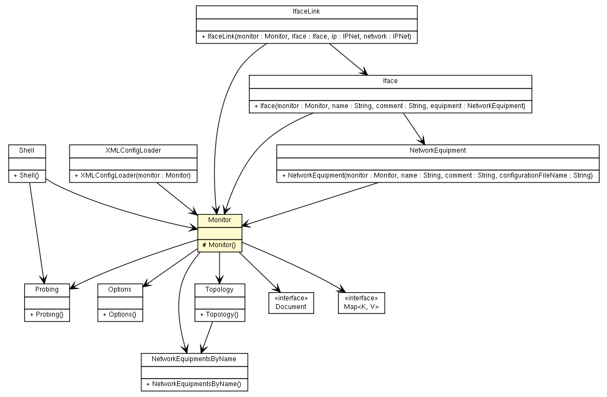

fr.univrennes1.cri.jtacl.core.monitor
Class Monitor

java.lang.Object
 fr.univrennes1.cri.jtacl.core.monitor.Monitor
fr.univrennes1.cri.jtacl.core.monitor.Monitor
public class Monitor
- extends java.lang.Object
- Author:
- Patrick Lamaiziere
|
Constructor Summary |
protected |
Monitor()
|
|
Method Summary |
void |
addEquipment(java.lang.String className,
java.lang.String equipmentName,
java.lang.String equipmentComment,
java.lang.String fileName)
|
void |
configure(java.lang.String fileName)
|
NetworkEquipment |
createNetworkEquipment(java.lang.String className,
java.lang.String equipmentName,
java.lang.String equipmentComment,
java.lang.String fileName)
|
java.util.Map<java.lang.String,java.lang.String> |
getDefines()
|
NetworkEquipmentsByName |
getEquipments()
|
static Monitor |
getInstance()
|
Options |
getOptions()
|
Probing |
getProbing()
|
Topology |
getTopology()
|
void |
init()
|
void |
newProbing(IfaceLink link,
IPNet sourceAddress,
IPNet destinationAddress,
ProbeRequest request)
|
protected void |
readIcmp(IPIcmp ipIcmp,
java.io.InputStream stream)
|
protected void |
readProtocols(java.io.InputStream stream)
|
protected void |
readServices(java.io.InputStream stream)
|
void |
receiveProbe(IfaceLink link,
Probe probe,
IPNet nextHop)
|
void |
resetProbing()
|
void |
sendProbe(IfaceLink link,
Probe probe)
|
Probing |
startProbing()
|
| Methods inherited from class java.lang.Object |
clone, equals, finalize, getClass, hashCode, notify, notifyAll, toString, wait, wait, wait |
_instance
protected static Monitor _instance
_xmlConfiguration
protected org.w3c.dom.Document _xmlConfiguration
_hopCount
protected int _hopCount
_options
protected Options _options
_defines
protected java.util.Map<java.lang.String,java.lang.String> _defines
_equipments
protected NetworkEquipmentsByName _equipments
_topology
protected Topology _topology
_probing
protected Probing _probing
Monitor
protected Monitor()
getInstance
public static Monitor getInstance()
readProtocols
protected void readProtocols(java.io.InputStream stream)
readServices
protected void readServices(java.io.InputStream stream)
readIcmp
protected void readIcmp(IPIcmp ipIcmp,
java.io.InputStream stream)
createNetworkEquipment
public NetworkEquipment createNetworkEquipment(java.lang.String className,
java.lang.String equipmentName,
java.lang.String equipmentComment,
java.lang.String fileName)
addEquipment
public void addEquipment(java.lang.String className,
java.lang.String equipmentName,
java.lang.String equipmentComment,
java.lang.String fileName)
getEquipments
public NetworkEquipmentsByName getEquipments()
getProbing
public Probing getProbing()
configure
public void configure(java.lang.String fileName)
init
public void init()
getTopology
public Topology getTopology()
receiveProbe
public void receiveProbe(IfaceLink link,
Probe probe,
IPNet nextHop)
sendProbe
public void sendProbe(IfaceLink link,
Probe probe)
resetProbing
public void resetProbing()
startProbing
public Probing startProbing()
newProbing
public void newProbing(IfaceLink link,
IPNet sourceAddress,
IPNet destinationAddress,
ProbeRequest request)
getOptions
public Options getOptions()
getDefines
public java.util.Map<java.lang.String,java.lang.String> getDefines()
Copyright © 2010. All Rights Reserved.